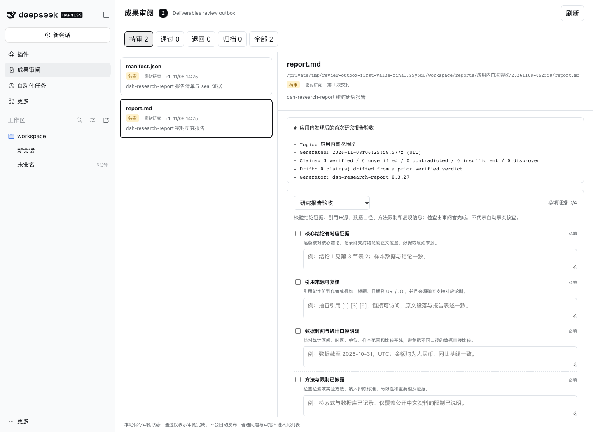

DEEPSEEK HARNESS PLUGIN · REVIEW OUTBOX 0.1.1
研究报告验收清单
核对结论、引用、数据口径和方法限制。无需安装即可使用清单并查看真实 SHA-256 验收单。
在 DSH 中安装 0.1.1
- 打开「插件」，启用实验性「自定义插件索引」。
- 进入「发现 → 添加索引源」，添加以下地址：
https://zjukop3.github.io/dsh-review-outbox/plugins.json- 搜索 Review Outbox 或 研究报告，确认 0.1.1 和完整提交后安装。
- 回到「已安装」启用插件，打开左侧「成果审阅」。
应用内网络不可用时：固定提交 CLI 回退
dsh plugin --profile web add 'github:zjukop3/dsh-review-outbox#9f7e608a192094272638802e77ca9b1197f8cff1'
dsh web第一次打开就有明确下一步
真实 Web GUI 已验证：安装前密封报告自动回填，默认显示必填证据 0/4；完成四项证据后通过并下载验收单。
